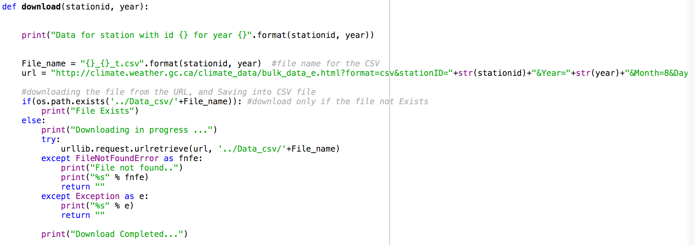

class: center, middle # A PROJECT FOR CALCULATING GROWING DEGREE DAYS (GDD) IN CANADA --- # Introduction The Growing Degree Day, or GDD, is a heat index that can be used to predict when a crop will reach maturity. Each day’s GDD is calculated by subtracting a reference temperature, which varies with plant species, from the daily mean temperature. The reference temperature for a given plant is the temperature below which its development slows or stops. For example, cool season plants, have a reference temperature of 40 degrees fahrenheit while warm season plants, have a reference temperature of 50 degrees fahrenheit. The development of plants depends on the accumulation of heat and since cool season plants have a lower reference temperature, they accumulate GDDs faster than warm season plants. The base temperature is that temperature below which plant growth is zero. GDs are calculated each day as maximum temperature plus the minimum temperature divided by 2 (or the mean temperature), minus the base temperature. GDUs are accumulated by adding each day’s GDs contribution as the season progresses. --- # Plot Code <img src="PlotCode.png" width="720" height="402"/> --- ### Data Visualization <img src="Fig_50089_2015.png" width="720" height="402"/> --- ### Data Visualization <img src="Fig_50092_2015.png" width="720" height="402"/> ---  --- <img src="2.png" width="720" height="402"/> --- --- --- <img src="Page2_1.png" width="720" height="402"/> --- <img src="Page2_2.png" width="720" height="402"/> --- --- Gdd Plot <iframe src=plots/Bokeh_GDD_50089.html></iframe> --- GDD over Tbase <iframe src=https://github.com/bs6523/CMSC6950_Group_Project/blob/master/plots/Bokeh_GDD_tbase50092.html></iframe> --- Data Visualization: <iframe src="https://github.com/bs6523/CMSC6950_Group_Project/blob/master/plots/Bokeh_Min-Max_50089.html"></iframe> --- Min-Max: <iframe src="https://github.com/bs6523/CMSC6950_Group_Project/blob/master/plots/Bokeh_Min-Max_6842.html"> </iframe> --- Gdd accumulated: <iframe src="https://github.com/bs6523/CMSC6950_Group_Project/blob/master/plots/Bokeh_GDD-Accum_27378.html"></iframe> --- Gdd Plot: <iframe src="https://github.com/bs6523/CMSC6950_Group_Project/blob/master/plots/Bokeh_GDD_50089.html"></iframe> --- GDD over Tbase: <iframe src="https://github.com/bs6523/CMSC6950_Group_Project/blob/master/plots/Bokeh_GDD_tbase50092.html"></iframe> --- # MULTI PROCESSING EXECUTION <img src="/home/solidbay/Group_Project/CMSC6950_Group_Project/processor_1.png" width="720" height=""/> <img src="/home/solidbay/Group_Project/CMSC6950_Group_Project/processor1.png" width="720" height="220"/> --- <img src="/home/solidbay/Group_Project/CMSC6950_Group_Project/processor.png" width="720" height="402"/> --- # Mark Down-to_Slide HTML Hosting on Github <img src="/home/solidbay/Group_Project/CMSC6950_Group_Project/slide1.png" width="720" height="402"/> <img src="/home/solidbay/Group_Project/CMSC6950_Group_Project/slide2.png" width="720" height="402"/> --- # Introduction